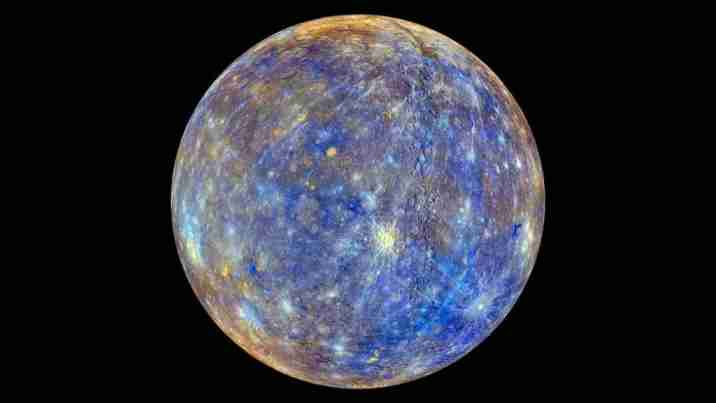
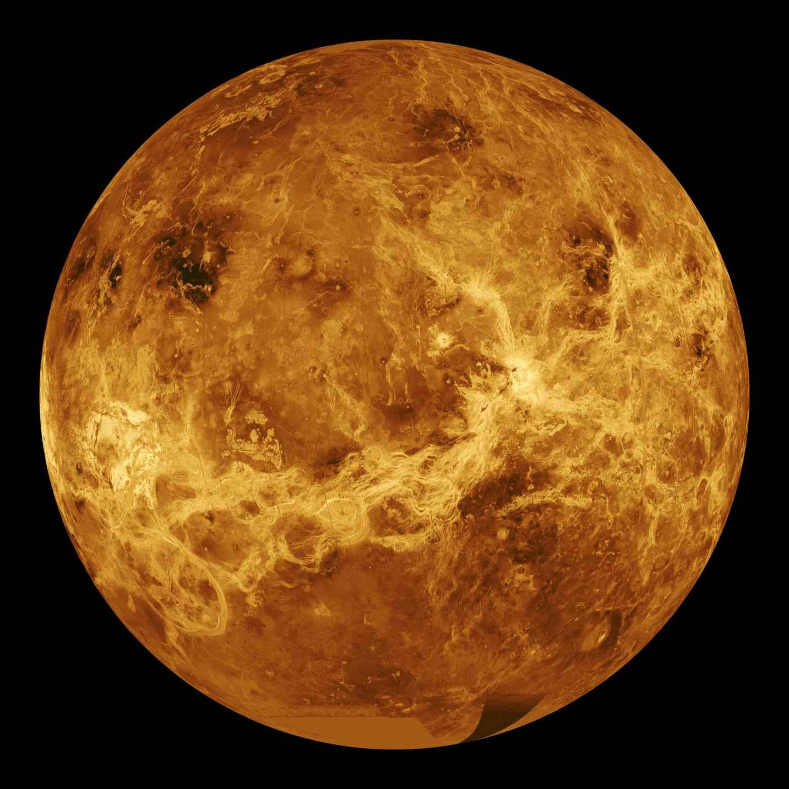
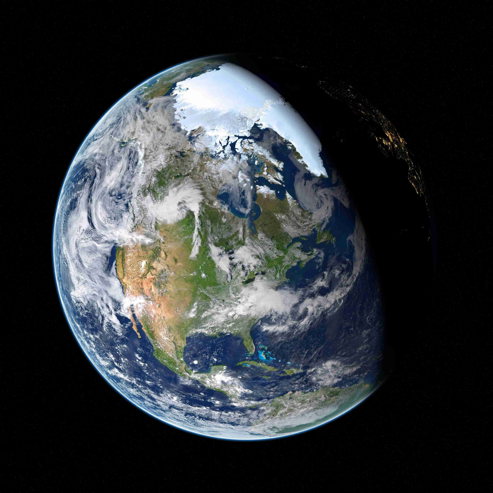
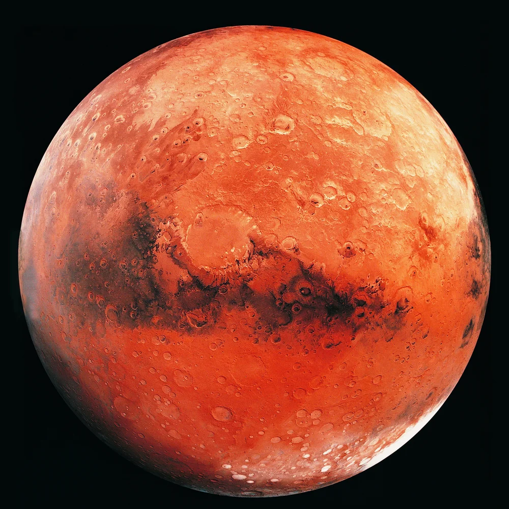
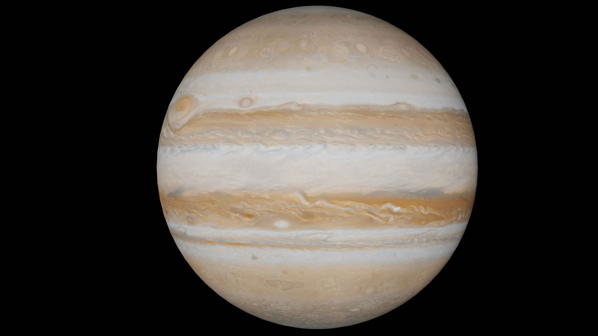
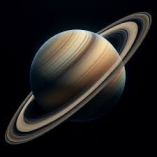
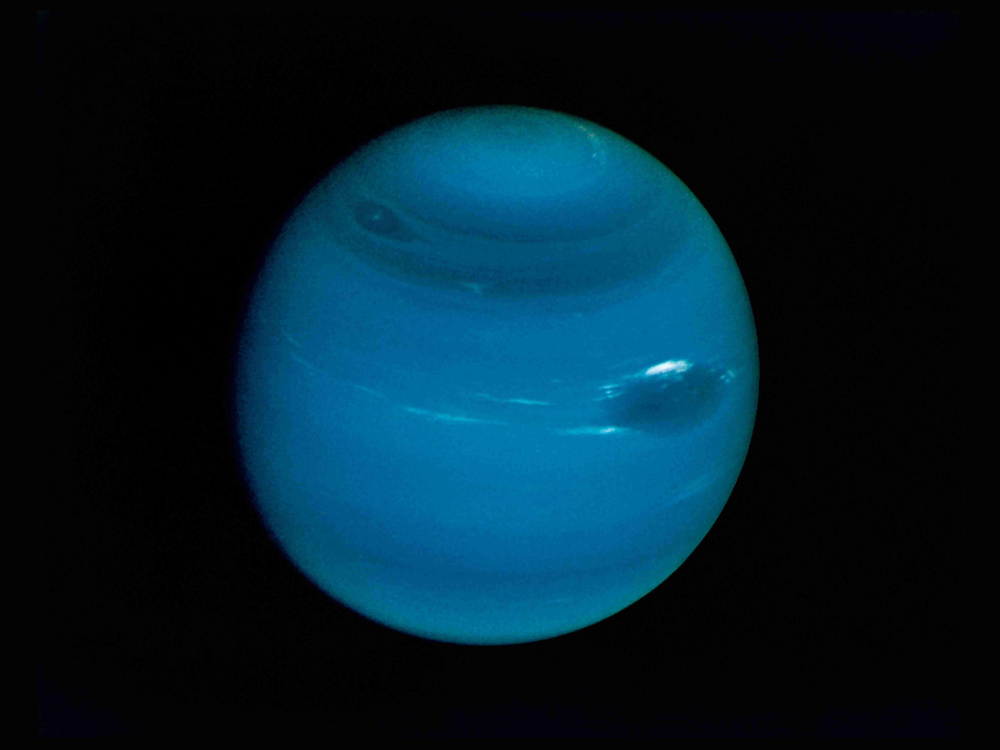

الكواكب في النظام الشمسي

عطارد
يُعتبر عطارد أقرب كوكب إلى الشمس، ويستغرق 88 يومًا ليكمل مدارًا واحدًا حولها. كما أن له أعلى درجات حرارة في النظام الشمسي.
استكشاف


الأرض
الأرض هي الكوكب الوحيد المعروف الذي يدعم الحياة. تدور حول الشمس في 365 يومًا ولها قمر واحد.
استكشاف

المريخ
يُعرف المريخ بالكوكب الأحمر بسبب أكاسيد الحديد على سطحه. يستغرق 687 يومًا لإكمال مداره حول الشمس.
استكشاف

المشتري
المشتري هو أكبر كوكب في النظام الشمسي. يمتلك 79 قمرًا ويستغرق حوالي 12 عامًا لإكمال مداره حول الشمس.
استكشاف


أورانوس
أورانوس هو كوكب غازي يتجه حول نفسه بشكل أفقي. يستغرق 84 عامًا لإكمال مداره حول الشمس.
استكشاف

نبتون
نبتون هو أبعد كوكب عن الشمس ويستغرق 164 عامًا لإكمال مداره. يُعرف بلونه الأزرق الجميل.
استكشاف